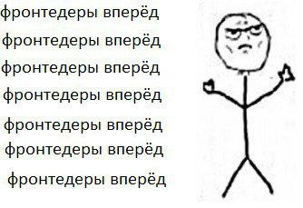

Первый абзац
Для меня курс фронтенда в первую очередь, возможность с необычной точки зрения посмотреть на все накопленные
мной знания. Я уверен, что, например, освоив Promise Monad в языке JavaScript, я улучшу свои навыки написания функционального,
конкурентного и асинхронного кода, стану лучше понимать многие темы в программировании, и концепции, кажется, знакомые мне,
откроются для меня с новой стороны. Я смогу найти интересное и необычное применение своим знаниям, сделать их более релеватными.
Второй абзац
С другой стороны, изучение фронтенда открывает для меня возможность получить опыт и знания в ранее незнакомой мне области,
даже если я не буду работать фронтенд-разработчиком, я смогу вынести из этой области некоторые идеи, которые потом можно
будет применять в моей жизни. Когда-то знакомство с функциональным программированием (не имеющим отношения к реальной
жизни, как я думал тогда) открыло для меня для меня некоторые карьерные перспективы, в том числе возможность работать
на моём текущем месте работы. С тех пор я не привык пренебрегать возможностью расширить свой кругозор
и получить знания, даже тем, которые кажутся нерелеватными для меня в текущий момент.
Третий абзац
В-третьих, возможно, когда-нибудь я стану определять развитие бэкенд-составляющей какого-нибудь сервиса, и для того, чтобы
эффективней руководить бэкенд-разработкой, чтобы делать сервис лучше, надёжней и полезней для пользователей, нужно
будет понимать цели, задачи, приёмы и технические возможности других команд, развивающих тот же сервис, в том
числе и фронтенд-команды. Для эффективного развития сервиса необходима коммуникация между командами, командам необходимо понимать
друг друга, и изучение фронтенда поможет мне лучше понимать фронтендеров, достигать с ними консенсуса.
Четвёртый абзац
Кроме того, умение писать фронтенд может пригодиться в самый неожиданный момент, например, на хакатонах. Программист,
умеющий писать как бекенд, так и фронтенд, умеет решать более широкий круг задач более широким кругом методов,
а значит, при прочих равных, лучше простого бэкендера.
В заключение
Резюмируя вышесказанное, я пришёл к выводу, что изучение фронтенда для меня это
- Возможность взглянуть с необычной точки зрения на привычные концепции
- Возможность узнать новые идеи, которые я потом смогу применить в более актуальных для себя областях
- Возможность лучше понимать фронтенд-разработчиков, чтобы в дальнейшем эффективней совместно развивать сервис
- Возможность выучить крайне полезный в жизни навык
──────▄▌▐▀▀▀▀▀▀▀▀▀▀▀▀▀▀▀▀▀▀▀▀▀▀▀▀▀▀▀█
───▄▄██▌█ ФУРА С ДИЗАЙНОМ ПРИЕХАЛА █
▄▄▄▌▐██▌█ ГДЕ РАЗГРУЖАТЬ? █
███████▌█▄▄▄▄▄▄▄▄▄▄▄▄▄▄▄▄▄▄▄▄▄▄▄▄▄▄▄█
▀(@)▀▀▀▀▀▀▀(@)(@)▀▀▀▀▀▀▀▀▀▀▀▀▀▀(@) (@)▀▀▀
